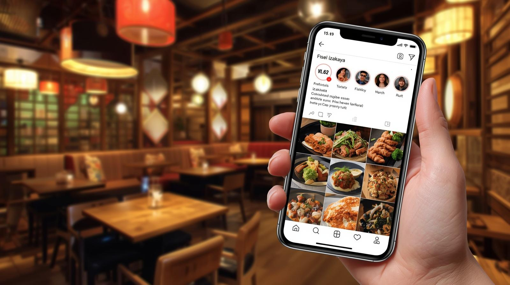
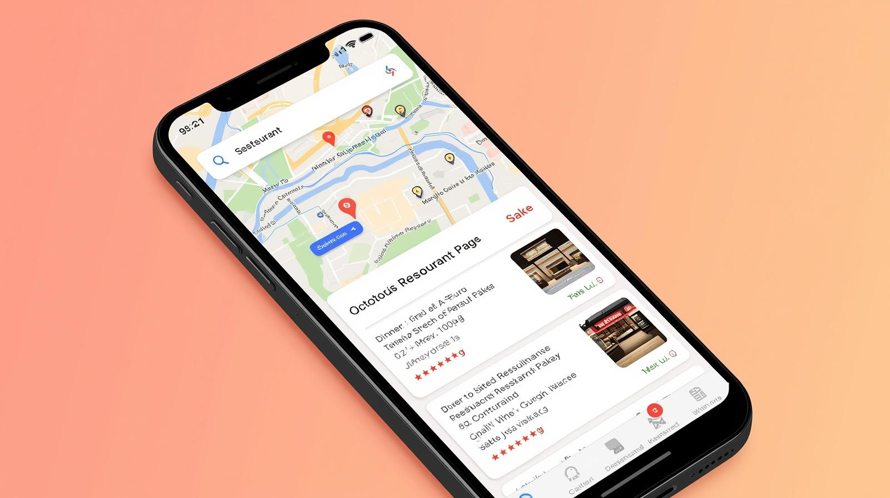
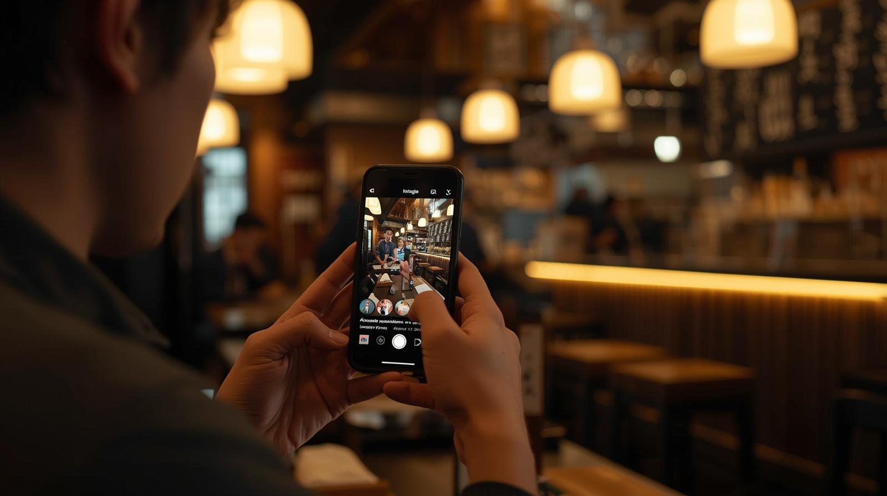

カネサ藤原屋 お取引先様 限定プランのご案内
味には自信があるのに、
客席が埋まらない。
その悩み、そろそろ
終わりにしませんか？
Instagram・Googleマップの集客、撮影から投稿まで全部お任せください。
その悩み、そろそろ
終わりにしませんか？
Instagram・Googleマップの集客、撮影から投稿まで全部お任せください。
お悩み
仕込みと営業で一日が終わる。SNSやネット集客まで手が回らない。
そんなオーナー様に共通する悩みがあります。
01
Googleマップで検索されても、他のお店の下に埋もれたまま。見つけてもらえないまま、素通りされているかもしれません。
02
料理を撮って投稿するだけでは、フォロワー以外の人には届きません。新規客に届けるには、仕組みが要ります。
03
毎日の仕込み・営業・接客で精一杯。SNS運用のための時間も、ノウハウも、人手もない。
どれだけ料理が美味しくても、
スマホで見つけてもらえなければ、
せっかくの美味しさは
お客様に届きにくいままです。
そんな「もったいない」を減らしていきたい。
それが繁盛SNSの想いです。
選ばれる理由
繁盛SNSが選ばれている、
3つの理由をご紹介します。
01
撮影・編集・投稿はもちろん、コメント返信・DM対応・口コミ返信・毎月の成果分析・改善提案まで、運用全般をお任せいただけます。オーナー様は料理と接客だけに集中できます。
02
フォロワー数を増やすことや、検索順位を上げるだけではなく、クーポンやDMを活用した再来店の仕組みづくり等、実際にお店に来てくれるお客様を増やすことを目的としています。
03
Googleマップの口コミ、Instagramのフォロワー、撮影した写真や動画は、すべてお店に残り続けます。続けた分だけ、お店を支え続ける力になっていきます。
サービス内容
オーナーのやることは、
美味しい料理を出すことだけです。

01
リール動画月4本・写真投稿月4本。お店を知らない人のスマホに届く投稿を作ります。DMを活用したリピーター施策も含まれます。

02
Googleマップで調べたときに、お店が上位に表示される状態を作ります。口コミへの返信も含めてお任せください。

03
映えではなく、「行きたい」と思わせる。3ヶ月に1回、約2〜3時間。料理・店内・外観をまとめて撮影し、投稿素材を制作します。
04
毎月、来店につながる数字をわかりやすくご報告します。Instagramのリーチ数、Googleマップの検索表示回数・ルート検索数など、来店に近い指標を中心にお伝えし、翌月の改善提案も行います。
はじめ方
STEP01
まずはいつもの担当者に
お声がけください。
STEP02
お店に合った施策案をお持ちします。
納得いただけた場合のみ契約へ。
STEP03
初回撮影・セットアップ後、
翌月から投稿を開始します。
料金
費用対効果
SNS集客は、続けるほど常連客が増えていく仕組みです。
試算では、2年目の前半から費用を上回る利益が見込めます。
5年間で増える利益のイメージ
増える利益の累計
かかる費用の累計
※上記は一般的な飲食店のデータをもとにしたシミュレーションです。お店ごとに状況は異なりますので、あくまで参考イメージとしてご覧ください。
よくあるご質問
まったく問題ありません。企画・撮影・編集・投稿まですべてお任せください。オーナー様にお願いすることは、最初のご相談と3ヶ月に1回の撮影立ち会いのみです。
Googleマップの対策は、一般的に3〜6ヶ月で検索表示回数に変化が出ると言われています。Instagramは3ヶ月目以降が目安です。常連客が積み上がるには6ヶ月〜1年のスパンをお見込みください。
3ヶ月に1回、約2〜3時間をまとめて実施。料理・構成は事前打ち合わせで決定し、公開前にオーナー様にご確認いただきます。
まずは6ヶ月間、一緒に取り組ませてください。その後は、1ヶ月前にお知らせいただければいつでも停止できます。お店に合わないと感じられたら、無理に続ける必要はありませんので、ご安心ください。
もちろん可能です。グルメサイトを続けながら、GoogleマップとInstagramを新たな集客チャネルとして追加する形になります。
既存のアカウントをそのまま引き継いで運用しますので、フォロワーや口コミもそのまま活かせます。もちろん、オーナー様ご自身での投稿も引き続き可能です。投稿の方向性は事前にすり合わせながら進めていきますのでご安心ください。
気になったら、いつもの担当者に
「SNSの件」と
お声がけください。
ご相談後の契約義務は一切ありません。
「ちょっと話だけ聞いてみたい」そんなお声がけも歓迎です。